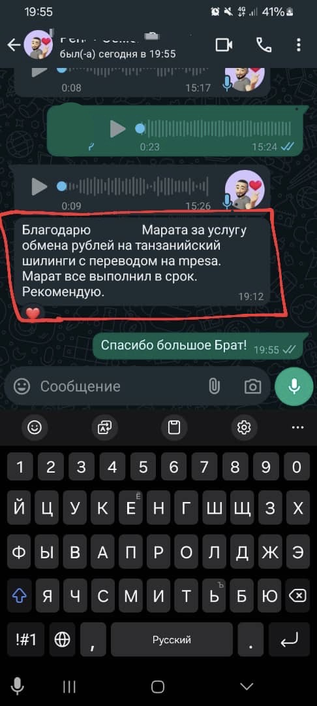
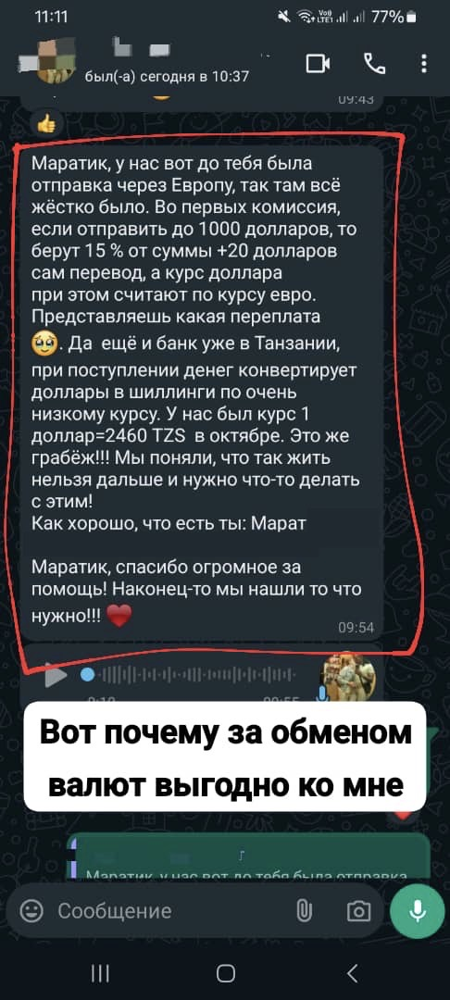
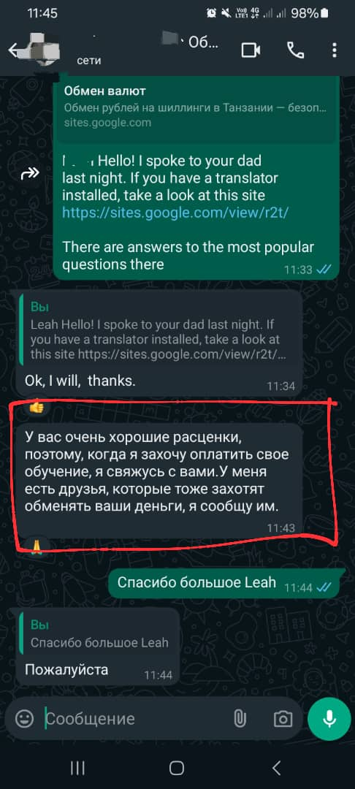
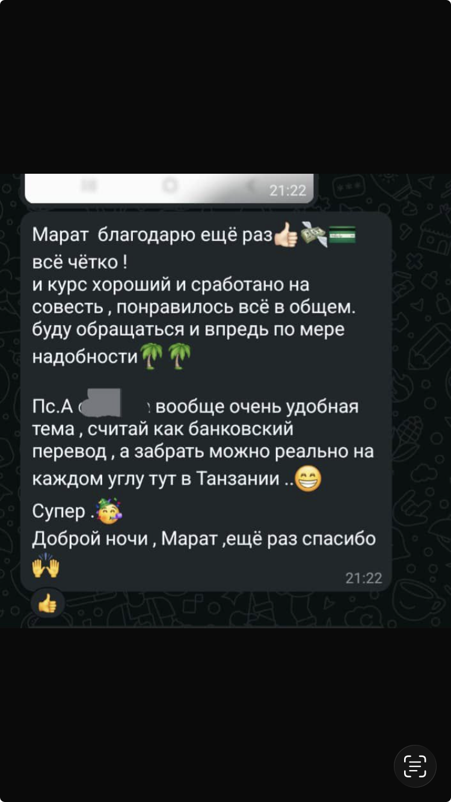

Алик. Друзья, всем привет. Хочу оставить отзыв о работе Марата по переводу российских рублей с карт российских банков на непосредственно сразу к вам на Танзанийский счёт в шиллингах. На телефон. Это система M-Pesa, агенты по всей стране, очень удобно, условия Марата на сайте, всё было сделано чётко, как и оговорено.
Вот, я только что снял свой первый трансфер самостоятельно, он объяснил мне, подсказал, как всё сделать. В общем, очень советую без танцев с бубном, без каких-то космических комиссий, кстати, которые нам предлагали. Обращайтесь к Марату. От души Марат, спасибо, всё чётко.
Обменять
Ли. Спасибо Марату за обмен китайских юаней на российские рубли. Всё прошло очень быстро, честно и открыто. Самая низкая комиссия, потому что я предварительно изучил рынок. Мне всё понравилось. Рекомендую всем. Большое спасибо. Марат, мой брат.
Обменять
Леа. Будучи студенткой из Танзании, обучающейся в России, я испытывала проблемы с обменом денег, особенно танзанийских шиллингов на рубли. Но мне удалось связаться с господином Маратом, и он обменял мне деньги по разумному курсу. Большое спасибо, господин Марат. Я получила деньги в короткие сроки после отправки.
Обменять
Марина. Марат, добрый день. Хотели бы выразить вам огромную благодарность за ту работу, которую вы провели. Мне даже не верится, мы не ожидали, что так легко и быстро может произойти обмен рублей на шиллинги. Порядка 40-50 минут. И вот, пожалуйста, уже операция произошла. Ведь мы же посылали немаленькую сумму.
И курс просто волшебный. Я такого курса и вообще никогда не встречала ранее. Теперь будем рассказывать всем друзьям и нашим знакомым о том, что есть вот такой Марат, менеджер app2.cash. Большое вам спасибо. Мы очень довольны.
Обменять
Али. Друзья, всем привет. Я хочу оставить отзыв о сотрудничестве с Маратом. Вчера мы вернулись из путешествия, в котором попали в довольно-таки неприятную ситуацию. Закончились наличные, не хватало на длинный рейс, на пересадку. И Марат два дня он помогал нам переводить очень оперативно, очень удобно переводить российские рубли с российской карты переводить к нему. Далее он переводит вам уже танзанийские шиллинги.
Обменять
Либуили. Привет Вы разговариваете с Либуили Амала Кинунду из Маньяры. Я хотел бы поблагодарить Марата за его честную и ответственную работу. Мне нужно было получить немного денег из России от моей семьи. Но как обменять российские рубли на танзанийские шиллинги? Это была большая проблема! К счастью Моя жена нашла Марата и этот парень смог сделать это очень быстро. Потребовалось всего 25 минут, чтобы обменять рубли на танзанийские шиллинги и перевести их на мой счёт Тиго песо. Спасибо Марат! Желаем вам процветания и благословит вас Бог!
Обменять
Василий. Меня зовут Василий. Я путешественник по Африке. Хочу выразить огромную благодарность своему другу Марату. Очень быстро осуществил перевод рублей на шиллинги из России в Занзибар. Потому что многие задаются вопросом, как мы русские туристы живём и как вообще мы получаем деньги. Потому что мы гт SWIFT отрезаны и, как правило, транзакции проходят через третьи лица. Потому что человек отзывчивый, приятный при общении, очень живой энергетикой.
Обменять
Александр. Ребята, всем привет. Хочу оставить отзыв по обмену валюты у Марата. Обмен прошёл быстро, чётко, дистанционно, без всяких скрытых комиссий. Рекомендую Марата как порядочного человека — пишите, звоните. Отвечает он в короткие сроки на любые возникшие вопросы. Всё доходчиво и понятно. Всем спасибо и хорошего дня. Обращайтесь.
Обменять